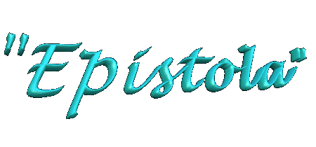
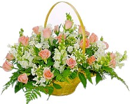
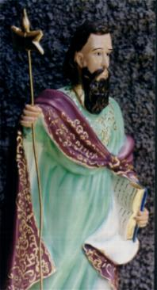
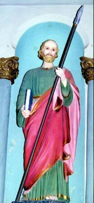
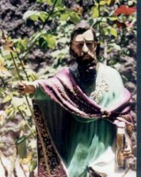

A Carta que São Judas escreveu faz parte dos livros canônicos e está na Bíblia. Seu conteúdo é uma severa advertência contra os falsos mestres e também, um fraterno convite endereçado a todos os corações de boa vontade para seguirem perseverantes os ensinamentos Divinos, mantendo a pureza da fé. Foi escrita com a finalidade de combater as heresias que proliferavam naquela época. Fazendo uma apreciação da Missiva do Apóstolo, Origines afirmou: “São Judas escreveu uma carta em poucas linhas, mas repleta de coisas vigorosas. É comparada aos escritos de um Profeta. O estilo é vivo, claro e cheio de imagens. Os pensamentos admiravelmente coordenados. A época em que a carta foi escrita, deve ter sido no ano 66 ou 67, e o local, em Alexandria ou Jerusalém”.Merece realce os versículos 22 e 23, nos quais o Apóstolo propõe aos fieis, uma série de iniciativas objetivando a elaboração de um programa de vida cristã, com o cultivo da fé, disponibilidade para oração, ajuda fraterna e mútua entre as pessoas, sobretudo, o exercício de uma imensa confiança na misericórdia de JESUS.
A seguir transcrevemos a missiva para uma minuciosa apreciação:
“Judas, servo de JESUS CRISTO, irmão de Tiago, aos que foram chamados, amados por DEUS PAI e guardados em JESUS CRISTO, a misericórdia, a paz e caridade vos sejam concedidas em abundância.
Amados, enquanto estava todo empenhado em escrever-vos a respeito da nossa salvação comum, tive de faze-lo por uma razão especial, para exortar-vos a combaterdes pela fé uma vez por todas confiada aos santos (santos eram denominados os cristãos que estavam em estado de graça). De fato, infiltraram-se entre vós alguns homens (hereges) já há muito marcados para esta sentença (este pecado), uns ímpios, que convertem a graça do nosso DEUS num pretexto para licenciosidade e negam JESUS CRISTO, nosso único mestre e SENHOR.
Quero trazer-vos à memória, embora já saibais tudo de uma vez por todas, que o SENHOR (o CRIADOR), depois de ter libertado o seu povo da terra do Egito, em seguida destruiu os incrédulos. E, quanto aos anjos (Lúcifer e os Anjos Rebeldes) que não conservaram o seu principado, mas abandonaram a sua morada [seduzidos pela beleza das filhas dos homens (Gn 6,1-2)], guardou-os presos em cadeias eternas, sob as trevas, para o juízo do grande Dia. De modo semelhante, Sodoma, Gomorra e as cidades vizinhas, por se terem prostituído (entregando-se aos mais abjetos vícios da carne), procurando unir-se a seres de uma natureza diferente (uma carne que não era humana), foram postas como espetáculos,ficando sujeitas ao castigo de um fogo eterno.
Ora, estes (os hereges) agem do mesmo modo: na sua alucinação conspurcam (sujam, maculam) a carne, desprezam a Autoridade (Anjos) e injuriam as Dignidades Celestes. E, no entanto, o Arcanjo Miguel, quando disputava com o diabo, discutindo com ele a respeito do corpo de Moisés (isto por que, depois da morte de Moisés o diabo reclamava o seu corpo), não se atreveu a pronunciar uma sentença injuriosa contra ele (isto é, contra o demônio), mas limitou-se a dizer: O SENHOR te repreenda! (Esta atitude de São Miguel revela respeito ao caráter angélico de Satan, embora ele é um Anjo decaído. São Judas mostra este exemplo para dizer como os hereges não sabem respeitar nem o poder e nem a glória devida ao SENHOR, enquanto o Arcanjo sabia respeitar no próprio demônio o caráter angélico). Mas estes (os hereges) injuriam o que não conhecem (ignoram porque não tem o ESPÍRITO SANTO); por outra parte, as coisas que conhecem fisicamente (de acordo com sua própria natureza), como os animais irracionais, só servem para perde-los.
Ai deles (dos hereges), porque trilham o caminho de Caim (que matou seu próprio irmão Abel); seduzidos por um salário, entregaram-se aos desvarios de Balaão e pereceram na revolta de Core (o Apóstolo está dizendo que, por ambição desviam-se do caminho certo, do direito e da justiça. Core se revoltou contra Moisés e Aarão e queria arrebatar-lhes o poder. Assim os hereges se revoltam contra a Igreja e contra o Sumo Pontífice). São eles que constituem os escolhos (obstáculos, manchas) nos vossos ágapes (ceia fraterna que precedia a Eucaristia), regalando-se irreverentemente, apascentando-se a si mesmos: são nuvens sem água, levadas pelo vento, árvores que no fim do outono não dão o seu fruto, duas vezes mortas, arrancadas pela raiz, ondas bravias do mar a espumarem a sua própria imprudência, astros errantes, aos quais está reservada a escuridão das trevas. A respeito deles profetizou Henoc, o sétimo dos patriarcas a contar de Adão, quando disse:
Eis que o SENHOR veio com as suas santas milícias exercer juízo sobre todos os homens e arguir todos os ímpios de todas as obras de impiedade que praticaram e de todas as palavras duras que proferiram contra ele os pecadores ímpios (citação feita de memória pelo Apóstolo).
São uns murmuradores, revoltados contra o destino, que procedem de acordo com as suas concupiscências; a sua boca profere palavras arrogantes, mas estão sempre prontos a bajular, quando o seu interesse está em jogo (A heresia destrói a seiva da graça e a união com CRISTO. O herege é árvore duplamente morta).
Vós, porém, amados, lembrai-vos das palavras de antemão preditas pelos Apóstolos de NOSSO SENHOR JESUS CRISTO, pois vos diziam: Nos últimos tempos surgirão escarnecedores, que levarão uma vida acorde com as suas próprias concupiscências ímpias. São estes os que causam divisões, uns homens mundanos, que não tem o ESPÍRITO.
Mas vós, amados, edificando-vos a vós mesmos sobre a vossa santíssima fé e orando no ESPÍRITO SANTO, guardai-vos no amor de DEUS, pondo a vossa esperança na misericórdia de NOSSO SENHOR JESUS CRISTO para a vida eterna. Procurai convencer os hesitantes; a outros procurai salvar, arrancando-os ao fogo; de outros ainda tende misericórdia, mas com temor, aborrecendo a própria veste manchada pela carne (alusão simbólica à túnica dos leprosos que se manchava de sangue e a lei mosaica ordenava que fosse queimada a fim de não contaminar outras pessoas. Assim também, recomendava o Apóstolo, devem fugir da heresia e da má doutrina para não serem contaminados pelo ensinamento errôneo).
Àquele que pode guardar-vos da queda e apresentar-vos perante a sua glória irrepreensíveis e jubilosos, ao único DEUS, nosso Salvador, mediante JESUS CRISTO NOSSO SENHOR, glória, majestade, poder e domínio, antes de todos os séculos, agora e por todos os séculos! Amém.”


